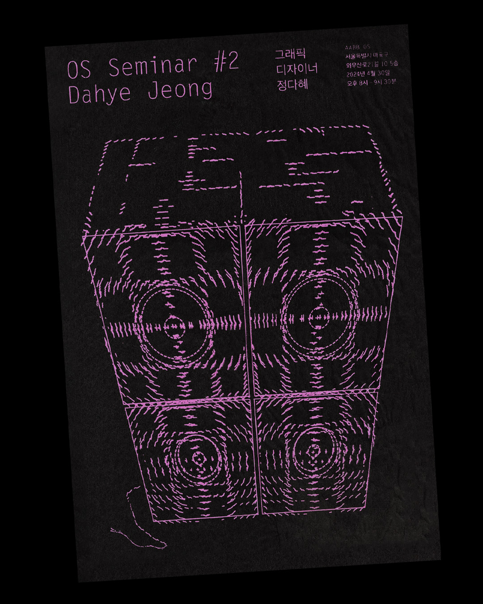
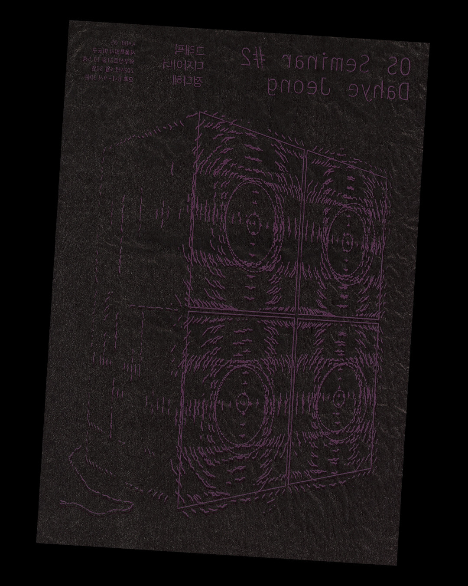
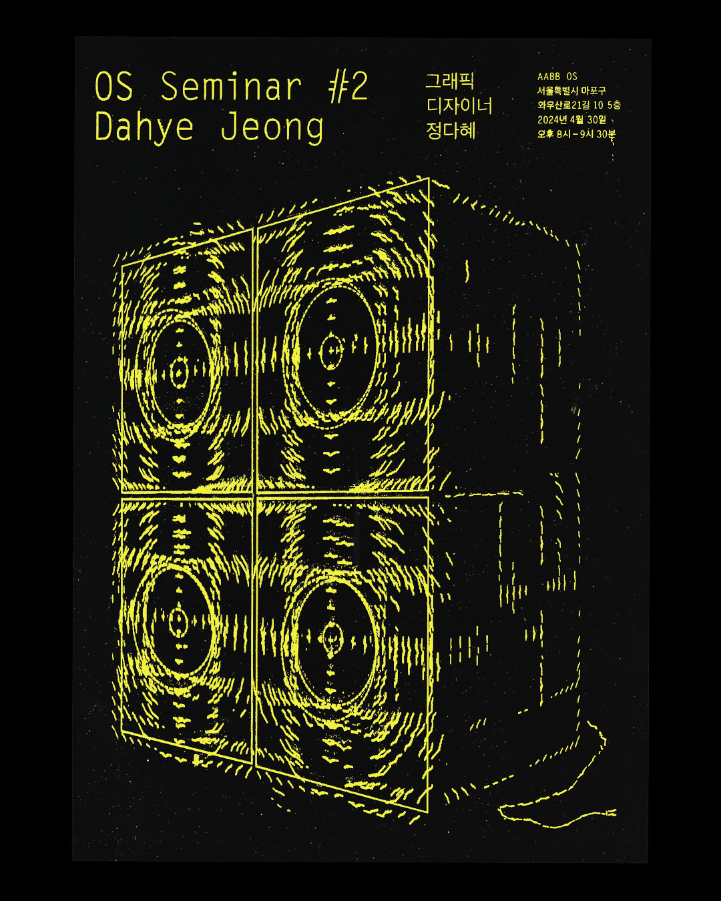

OS Seminar 2. Dahye Jeong Poster (2024)
Graphic Design, Poster, Silk screening
@aabb.inc held a seminar with @jongdare on April 30, 2024,
tallking about design while enjoying music through the @apple homepod
with 15 participants.🔊🎛️🎶
OS 세미나 2. 정다혜 포스터
그래픽 디자인, 포스터, 실크스크린



